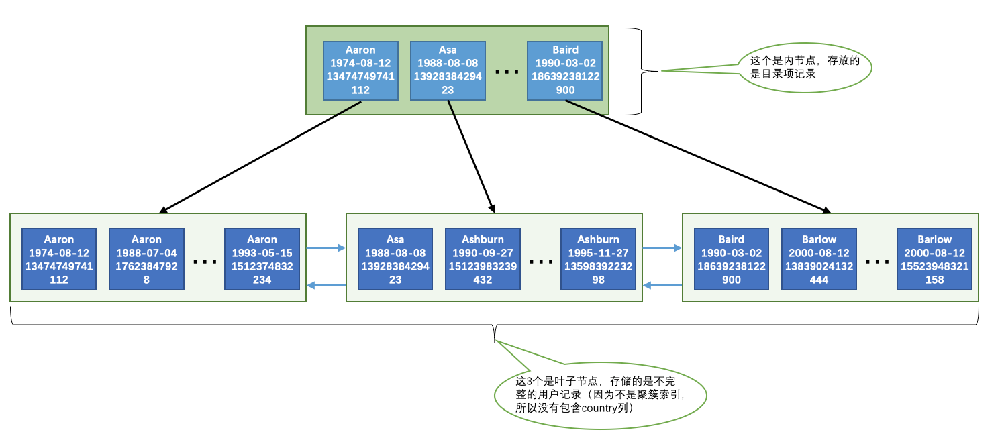

B树与B+树
B树
B树是一种多路查找自平衡的树，它的所有叶子节点都位于同一层，即B树是绝对平衡的（就像2-3树一样）。与AVL树不同，B树适用于读写相对大的数据块的存储系统，如磁盘。B树有如下重要特点：
- 根结点至少有两个子女。
- 所有的叶子结点都位于同一层。
- 每个节点中的元素从小到大排列。
- 每个节点中都存储有数据。
B树图解：

B+树
在B树的基础上，为叶子结点增加链表指针(B树+叶子有序链表），且非叶子节点不保存数据，只有叶子节点保存数据，非叶子节点中保存的是孩子节点中的临界值（最大值或最小值），因此非叶子节点能存储更多的孩子节点地址信息，B+树相较于B树更加“矮胖”，I/O次数减少。B+树通常用于关系型数据库(如MySQL)和操作系统的文件系统中。

InnoDB索引
聚簇索引
聚簇索引（Clustered Index）就是按照主键列构造一棵B+树，所有完整的用户记录都存放在这个聚簇索引的叶子节点处。聚簇索引并不需要我们在MySQL语句中显式的使用INDEX语句去创建，InnoDB存储引擎会自动的为我们创建。如果用户创建表时没有指定主键，InnoDB会选择表中的第一个Not NULL Unique Index（非空唯一索引）作为主键，若这也没有，那么就会添加隐藏列DB_ROW_ID作为主键，这是一个隐式的自增ID。聚簇索引有如下特点：
- 页内的记录按照
主键列的大小顺序排成一个单向链表。 - 页之间按照
主键列的大小顺序排成一个双向链表。 - 同一层次的非叶子节点索引页之间根据
主键列的大小顺序排成一个双向链表。 - 叶子节点中存储了所有列的数据。
二级索引
以非主键列（下面用c列代替）构建的B+树索引称为二级索引（Secondary Index）。二级索引的特点是：
- 页内的记录按照
c列的大小顺序排成一个单向链表。 - 页之间按照
c列的大小顺序排成一个双向链表。 - 同一层次的非叶子节点索引页之间根据
c列的大小顺序排成一个双向链表。 - 叶子节点中存储的并不是完整的记录，而是只存储了
c列和主键这两个列的值。（重要）
因此where子句的条件中使用二级索引匹配时：先在二级索引中匹配到对应的主键id，再根据主键id回表，到聚簇索引中查询其他列的数据，这里也就是用到了2棵B+树；若查询要求返回的列中只有索引列，甚至不需要进行回表操作。
联合索引
我们也可以同时以多个列的大小作为排序规则，也就是同时为多个列建立索引，比方说我们想让B+树按照c1和c2列的大小进行排序，这个包含两层含义：
- 先把各个记录和页按照
c1列进行排序。 - 在记录的
c1列相同的情况下，采用c2列进行排序。
(c1, c2)就是一个联合索引，其本质上也是一个二级索引，只会建立一棵B+树
注意事项
- 每当为某个表创建一个
B+树索引（聚簇索引不是人为创建的，默认就有）的时候，都会为这个索引创建一个根节点页面。最开始表中没有数据的时候，每个B+树索引对应的根节点中既没有用户记录，也没有目录项记录。随后向表中插入用户记录时，先把用户记录存储到这个根节点中。当根节点中的可用空间用完时继续插入记录，此时会将根节点中的所有记录复制到一个新分配的页，比如页a中，然后对这个新页进行页分裂的操作，得到另一个新页，比如页b。这时新插入的记录根据键值（也就是聚簇索引中的主键值，二级索引中对应的索引列的值）的大小就会被分配到页a或者页b中，而根节点便升级为存储目录项记录的页。 - 非叶子节点中目录项记录时唯一的，如果用户创建的二级索引不是唯一索引，那么一个非叶子节点中岂不是可能出现相同的记录？因此对于二级索引，目录项记录是由索引列+主键列构成的，保证了一条记录的唯一性。
- 一个页面最少存储2条记录。
执行SQL时使用到索引的情形
首先创建表：
1 | CREATE TABLE person_info( |
插入数据后简化的B+树如下：

由图可知，联合索引对应的B+树页面和记录的排序方式为：
- 先按照
name列的值进行排序。 - 如果
name列的值相同，则按照birthday列的值进行排序。 - 如果
birthday列的值也相同，则按照phone_number的值进行排序。
根据索引以上的性质，可以得出以下情况MySQL会使用到索引的结论：
WHERE子句
全值匹配
搜索条件列和索引列一致，比如：
1 | SELECT * |
匹配左边的列
依次匹配定义联合索引时左边的列，比如：
1 | SELECT * |
或者：
1 | SELECT * |
但是下面这个SQL语句就不会使用到B+树索引：
1 | SELECT * |
以下这个SQL语句只会使用name列的索引，phone_number就只能去遍历了：
1 | SELECT * |
最左匹配
匹配列的前缀，比如：
1 | SELECT * |
这是因为默认的字符串匹配规则就是从左开始依次匹配的，下面这个SQL语句就无法使用索引了：
1 | SELECT * |
匹配索引的范围值
比如：
1 | SELECT * |
由于B+树中的记录和页都是由链表串连起来的，因此范围匹配实际上就是找到区间的端点，然后取出中间所有的结果，那么上面这个SQL语句执行时就是找到name='Asa'和name='Barlow'这两个区间端点了，因此依然会使用到索引。
以下这个SQL语句会使用到name列和birthday列索引，原理不再赘述：
1 | SELECT * |
ORDER BY子句
一般情况下我们使用ORDER BY子句对查询结果排序都是MySQL在内存中使用排序算法完成的，而如果我们的ORDER BY子句条件和和索引列一致的话，就不需要进行耗时的排序操作了，因为B+树在构建索引时就为我们排好序了，比如：
1 | SELECT * |
注意，ORDER BY子句给出条件的顺序必须与定义索引时的顺序一致，这一点与WHERE子句的全值匹配是不一样的（查询优化器会对WHERE子句的条件进行优化）。以下这个SQL语句也是不需要在内存中排序的，原理不再赘述：
1 | SELECT * |
以下情况是无法使用索引进行排序的：
ASC/DES混用
对于使用联合索引进行排序的场景，我们要求各个排序列的排序顺序是一致的，也就是要么各个列都是ASC规则排序，要么都是DESC规则排序。比如：
1 | SELECT * |
上面这个SQL语句就无法使用索引排序。
排序列包含一个非索引列
1 | SELECT * |
排序列不是单独的索引列
要想使用索引进行排序操作，必须保证索引列是以单独列的形式出现，而不是修饰过的形式。比如：
1 | SELECT * |
GROUP BY子句
分组使用到索引的情况与排序类似，比如：
1 | SELECT name, birthday, phone_number, COUNT(*) |
覆盖索引
由于二级索引中只存储了索引列和主键列，那么如果查询列中如果有非索引列，MySQL就需要回表进行查询，即到聚簇索引中查询完整的数据。
二级索引中的记录是连续的，从中读取记录我们称为顺序I/O。但是从二级索引中读取出的记录的主键值，几乎可以肯定一定是离散的（见上图），那么我们回表就是去聚簇索引中根据离散分布的主键值查询一堆离散分布记录，这个称为随机I/O。
如果需要回表的记录非常多，这个代价还是很大的，还不如直接全表扫描聚簇索引来的快呢。因此使用二级索引查询时我们应该查询尽量少的数据，或者使用LIMIT限制查询数量。
那么如果我们的查询列中只有索引列，就不需要回表了呗，即所谓的覆盖索引。比如：
1 | SELECT name, birthday, phone_number |
索引注意事项
只为用于搜索、排序或分组的列创建索引：即只为出现在
WHERE子句中的列、连接子句中的连接列，或者出现在ORDER BY或GROUP BY子句中的列创建索引。只为基数大的列创建索引。列的基数（Cardinality）：某一列中不重复数据的个数。比如某一列有大量重复数据，那么二级索引回表的代价就太大了。
索引列的数据类型占用的字节数尽量小：比如我们能使用
INT就不要使用BIGINT，能使用MEDIUMINT就不要使用INT。因为：- 数据类型越小，CPU的比较操作越快。
- 数据类型越小，在一个数据页内就可以放下更多的记录，从而减少磁盘
I/O带来的性能损耗，也就意味着可以把更多的数据页缓存在内存中，从而加快读写效率。
只对字符串的前缀建立索引：如果索引需要把完整的字符串存储起来，那么既会浪费存储空间，查询时匹配也会耗时许多。因此我们可以只对字符串的前几个字符建立索引，比如：
1
2
3
4
5
6
7
8CREATE TABLE person_info(
name VARCHAR(100) NOT NULL,
birthday DATE NOT NULL,
phone_number CHAR(11) NOT NULL,
country varchar(100) NOT NULL,
-- 只需要在列后面写上保留的字符个数就行了
KEY idx_name_birthday_phone_number (name(10), birthday, phone_number)
);使用这种方式建立索引的缺点是，由于索引存储的不是完整的字符串，就无法使用索引进行排序，比如下面这个SQL语句就需要在内存中利用排序算法排序了：
1
2
3
4SELECT *
FROM person_info
ORDER BY name
LIMIT 10;使用索引时索引列不应被修饰：比如对索引列使用计算表达式或函数，MySQL都是无法使用索引查询的。
使用隐式主键或显式指定自增非空id：如果使用其他主键，比如手机号身份证号等等，那么会有一个问题——主键的插入顺序是随机的。而我们的B+树构建过程中主键是递增的，若插入主键是随机的，那么就会有大量的页面分裂和记录移位，这个性能开销是非常大的。
尽量使用覆盖索引，避免回表。